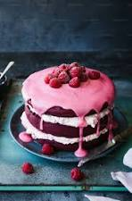

Home
Cake

Recipe
A cake is a baked sweet dessert made from flour, sugar, eggs, and fat (like butter or oil).
Ingredients
- 1 ½ cups all-purpose flour
- 1 ¾ tsp baking powder
- ¼ tsp salt
- ½ cup (1 stick) unsalted butter, softened at room temperature
- 1 cup granulated white sugar
- 2 large eggs, room temperature
- 2 tsp vanilla extract
- ½ cup whole milk, room temperature
Steps
Step 1: Prep Your Equipment